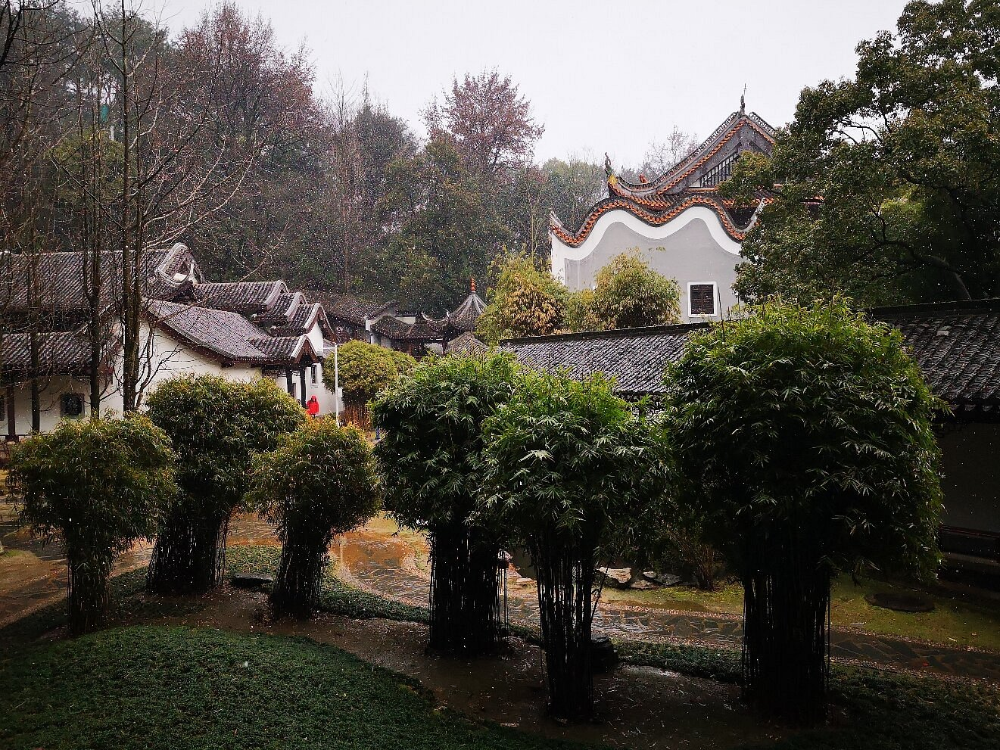
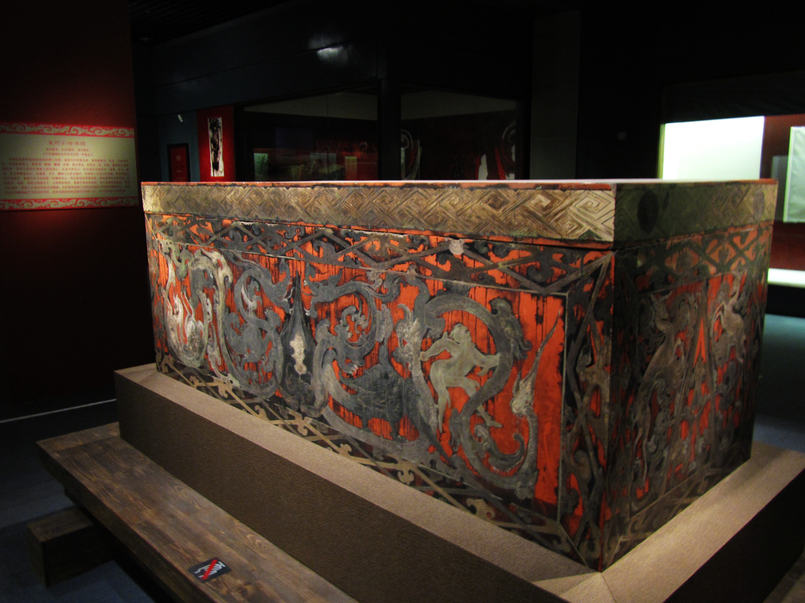
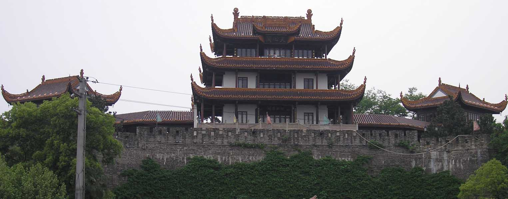

Yuelu Academy, founded in 976 AD during the Song Dynasty, is one of China’s “Four Great Ancient Academies”—a 1,000-year-old center of Confucian learning that still feels alive with wisdom. Tucked at the foot of Yuelu Mountain, the academy spans 21,000 square meters, with traditional Chinese buildings arranged around tree-shaded courtyards: lecture halls with wooden desks, libraries filled with ancient scrolls, and pavilions where scholars once meditated.
The academy’s most iconic spots include the “Loyalty, Filial Piety, Integrity, and Justice” Stele (a stone tablet with calligraphy by a Song Dynasty scholar), the “Bailuzhou” Platform (where students debated philosophy), and the “Aiwan Pavilion” (a wooden pavilion with views of the mountain). What makes it special is its continuity: it operated as a school for centuries and is now part of Hunan University—you might even see modern students studying in the courtyards, blending old and new.
Morning (9:00 AM–11:00 AM): Quiet, with sunlight filtering through the trees—perfect for exploring the courtyards.
Autumn (October–November): Ginkgo trees in the courtyard turn golden, adding warmth to the ancient buildings.
Entry Fee:40 CNY/adult; 20 CNY/students (with valid ID); free for kids under 1.3 meters.

Mawangdui Han Tombs Museum is an archaeological wonder—home to three tombs from the Western Han Dynasty (206 BC–8 AD) that yielded some of China’s most important ancient artifacts. Discovered in 1972, the tombs belonged to a noble family: Li Cang (a military general), his wife Xin Zhui, and their son. The star exhibit is the well-preserved mummy of Lady Xin Zhui: after 2,100 years, her skin is still elastic, her hair intact, and her internal organs undamaged—an unprecedented find in archaeology.
The museum has two parts: the outdoor tomb pits (where you can see the original burial chambers) and the indoor exhibition hall. The hall displays over 3,000 artifacts from the tombs: exquisite silk paintings (including a 2-meter-long “Heavenly, Earthly, and Underworld” scroll), lacquerware (with bright red and black patterns), and ancient medical texts (some of the earliest Chinese medical records). It’s a fascinating look at how nobles lived, ate, and believed in the Han Dynasty.
Year-round: Indoors (20°C–24°C), so it’s comfortable even in summer/winter.
Afternoon (2:00 PM–4:00 PM): Fewer crowds than the morning.
Entry Fee:50 CNY/adult; 25 CNY/students; free for kids under 1.2 meters.

Tianxin Pavilion, first built in the Jin Dynasty (266–420 AD), is Changsha’s oldest surviving city landmark—a three-story wooden pavilion that once guarded the southern gate of the ancient city wall. Though rebuilt multiple times (most recently in 1983), it retains its traditional design: upturned eaves carved with dragons and phoenixes, red pillars, and a roof covered in green glazed tiles.
Climbing to the top of the pavilion (52 meters high) gives you panoramic views: to the east, Changsha’s modern skyscrapers; to the west, the winding Xiang River; to the north, the bustling streets of the old town. The pavilion is surrounded by a small park with ancient banyan trees (some over 100 years old) and stone tablets with calligraphy from past emperors. Don’t miss the “Ancient City Wall Ruins” next to the pavilion—you can touch the rammed earth that protected Changsha for centuries.
Autumn (September–November): Cool weather, clear views, and fewer rain showers.
Night (7:00 PM–9:00 PM): The pavilion is lit up with red lanterns—romantic for evening walks.
Entry Fee:32 CNY/adult; 16 CNY/students; free for kids under 1.2 meters.